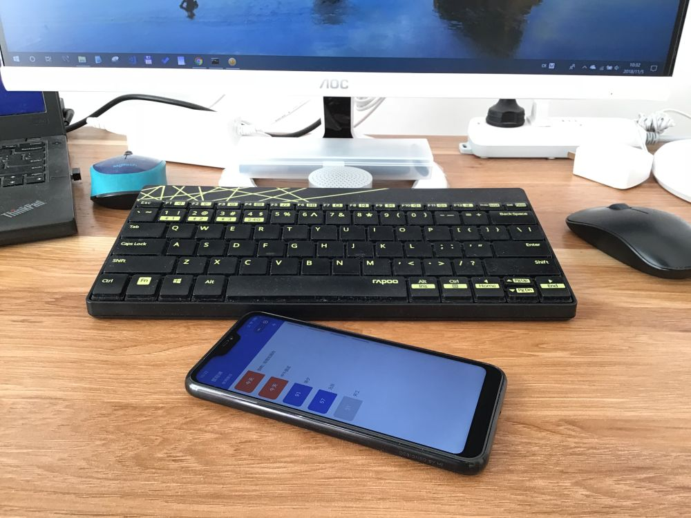
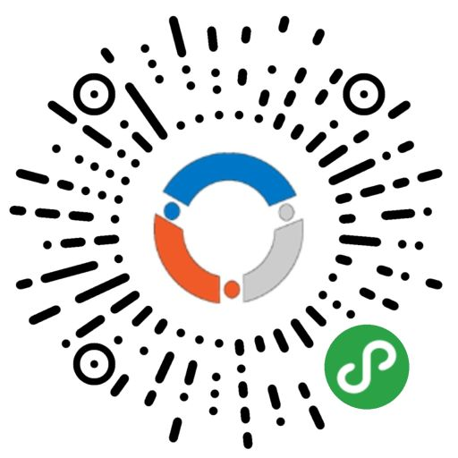

昨天我的第一款小程序上线了。从决定做这款小程序到最终上线一共用了16天。这些天中我做了熟悉小程序的开发工具，学习组件和API，策划，编码测试并上线等工作。在制作的过程中，技术上没有遇到什么问题，小程序的官方API文档做得相当棒，学习起来没有一点难度。反倒是在策划和UI设计上耽误了不少时间。
功能策划
我个人对小程序的理解是这样的：它是为了解决某个关键但并不需要被频繁使用的需求而存在的。 比如在饭店点餐。如果可以在手机端点餐那自然很方便，但是为了就餐而专门下载一款点餐的APP就有点过了。毕竟并不是每天都去同一家店吃饭，所以没有必要用专门的APP；再比如学生选课。每学期初期会集中选课，所以这一需求也只有在开学时才有。为此再下一个APP也会让人觉得用处不是很大。所以我重新梳理了一下自己平时的工作和生活习惯，决定做一款“倒数日”类的应用。它符合我自己对小程度的认知，重要，但是使用频率不高。
我习惯于给生活中的每件事设立一个节点。这个节点的概念借鉴于项目管理中的里程碑概念。它是项目到达某一状态的时间点，不占用任何资源。在生活中，有时会把要求放宽松些，这个时间点的单位可以是“天”。比如，我要在XX月XX日完成某个关键事项，那么这个XX月XX日对我来说就是一个节点。我会不时地查看距离这个节点的天数来自我检查工作进度的快慢。以前我把这些事项和节点记录到了OmniFocus中（虽然它没有倒数日期的功能）。而现在，我 ~~没钱了~~ 消费降级了，不再使用OSX和IOS设备，自然也就没有OmniFocus。OmniFocus非常强大，我只用到了其中1/100的功能，而这1/100的功能正好适合于做成小程序。就这样，功能定下来了。
界面设计
惭愧啊，我现在这界面，实在不敢用“设计”这两个字，虽然这也是我倾尽全力的结果。或许像我这样的程序员不在少数。自己写程序，能搞定的就只有技术问题。然而要做出一款可以交给用户使用的产品，技术只是其中一小部分。比如眼前这UI设计，我是真没辙啊。虽然买过设计相关的书（《写给大家看的设计书》），但也只学了点皮毛中的皮毛，最多能做出自己能看得下去的界面而已。要想让大多数用户都觉得“还凑合，不算太难看”，还需要很长的路要走。现在的界面已经是我改过好几次的产物，还望不要在界面上太挑剔，我会努力学习提升自己的。
接下来
这款小程序还有可修饰的地方，界面也还想再改善下，把它做成功能小巧、特定情况下十分有用的小程序。立个FLAG，想要加的功能有：
0、增加备注功能。在列表中长按可以查看备注；
1、增加左滑删除；
2、列表向下拉时可直接进入添加页面；
3、可以按月/年重复（2月29日，1、3、5、7、8、10、12月31日不可重复）；
4、增加分享功能；
5、（遥远地将来）数据可以存在服务器中；
最后
欢迎扫码试用一下我的《节点生活》小程序，并给我提意见。谢谢。
